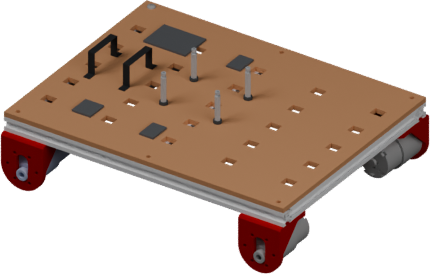
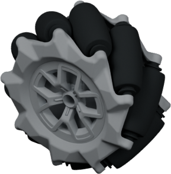
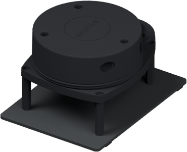

Robot design, with a compiler behind it
Describe a robot.
Compile the
whole system.
MobileCopilot chooses components and writes MobileDSL. The compiler turns that program into a robot, a world, and behavior that run together in ROS and Gazebo.
Studio preview: browse parts and edit programs.
Generation
and compilation await the hosted service.
 Loading 3D…
Loading 3D…

Mecanum + fixed arm
01 / 03“Drive forward and turn to expand outward in a spiral. The arm stays fixed.”
Image-conditioned benchmark example · Claude Code / claude-opus-4-8
Simulation benchmark · paired comparisons within three agent/model configurations · code ratios rounded.
How MobileCopilot works
The agent designs.
The compiler connects the pieces.
A missing waypoint can break a valid-looking program. Here’s how the paper’s warehouse example gets repaired.
The request
“Patrol with this robot. Visit W1, W2, W3, then return. Minimum clearance: 0.15 m.”
01 / Component search
A chassis, compatible wheels, and a LiDAR.
The agent inspects component images, dimensions and connector frames to decide what to use and where to mount it.



Geometry comes from the component library. MobileCopilot assembles existing parts.
02 / MobileDSL program
Four modules share the same names.
A task refers to a goal in the world. Controller settings depend on the robot. The compiler checks these connections.
- CoreDSL
- Components, mounts and joints
- WorldDSL
- Obstacles, starting pose and named goals
- TaskDSL
- Navigation actions and their order
- EvaluateDSL
- Observations and required bounds
03 / Compiler feedback
The task uses W2. The world doesn’t define it.
unresolved '@world/wp2'
The agent adds the missing goal to
warehouse.world and recompiles.
Goal wp1(pose="3.25 0 0 0 0 0 1")
+ Goal wp2(pose="3.25 1.7 0 0 0 0 1")
Goal wp3(pose="0 1.7 0 0 0 0 1")Repaired example: 0 errors, 1 advisory.
Download the paper’s repair diff04 / Execution
Compilation is the starting line.
The compiler produces robot and world models, controller and navigation settings, a behavior tree and an evaluation plan.
-
First: can the robot move?
Apply velocity commands and check simulator pose. -
Then: can it complete its behavior?
Check actions, goals, collisions and time limits.
In the benchmark, simulation happens after authoring. Agents receive static diagnostics, not simulation feedback; the common runtime evaluator scores every condition.
The measured difference
More working systems.
Less code to get there.
The same agent tackles the same 50 requests with MobileDSL and with directly authored ROS/Gazebo files.
Completes its programmed behavior
Chart unavailable. All measurements are in the table below.
50 attempts per condition, including failures. One attempt per request; revisions allowed within 1,800 seconds.
What “success” means: completing the generated program’s behavior in simulation. This does not independently establish that the design fulfills the original request.
| Agent / model | Representation | Motion % | Execution % | Code lines | Input tokens k | Output tokens k | Time s | Cost $ |
|---|---|---|---|---|---|---|---|---|
| Codex / gpt-5.6-sol | MobileDSL | 98 | 74 | 43.7 | 659.43 | 5.65 | 285 | 0.550 |
| Codex / gpt-5.6-sol | ROS/Gazebo | 56 | 24 | 505.3 | 1,793.43 | 18.37 | 731 | 1.406 |
| Codex / gpt-6-astra | MobileDSL | 100 | 82 | 46.8 | 419.05 | 2.52 | 151 | 0.871 |
| Codex / gpt-6-astra | ROS/Gazebo | 78 | 40 | 1,301.9 | 569.17 | 5.62 | 250 | 1.291 |
| Claude Code / claude-opus-4-8 | MobileDSL | 96 | 64 | 41.5 | 1,202.82 | 15.14 | 268 | 1.485 |
| Claude Code / claude-opus-4-8 | ROS/Gazebo | 58 | 22 | 870.0 | 2,227.61 | 39.95 | 569 | 2.959 |
Input/output tokens accumulate across all authoring calls, including cached input and revisions. Simulation is excluded from authoring effort. Costs use the provider rates recorded on September 11, 2026; they are not current price quotes.
Assembly does the heavy lifting.
Replacing CoreDSL with explicit robot files drops execution from 74% to 36% and increases code from 43.7 to 333.4 lines. This is the largest change among individual module replacements.
Compact code is not always faster to author.
Replacing EvaluateDSL increases code, but reduces tokens and time. The shared runtime checks remain in place. A 74% versus 70% success difference is only two cases.
| Configuration | Motion % | Execution % | Code lines | Tokens k | Time s | Cost $ |
|---|---|---|---|---|---|---|
| Full MobileDSL | 98 | 74 | 43.7 | 665 | 285 | 0.55 |
| No CoreDSL | 84 | 36 | 333.4 | 1,126 | 368 | 0.96 |
| No WorldDSL | 98 | 70 | 135.1 | 742 | 246 | 0.64 |
| No TaskDSL | 92 | 74 | 170.2 | 1,129 | 272 | 0.89 |
| No EvaluateDSL | 96 | 70 | 89.7 | 650 | 206 | 0.56 |
| ROS/Gazebo files | 56 | 24 | 505.3 | 1,812 | 731 | 1.41 |
WorldDSL and TaskDSL chiefly reduce authoring work here: replacing TaskDSL keeps execution at 74% but increases code, tokens and cost.
50 design requests
25 text-only and 25 with images. 32 involve basic motion; 18 involve obstacle avoidance or waypoint navigation.
Same conditions
Same requests, library, 1,800-second budget and simulation environment. Each format gets its own documentation and examples. All failed attempts stay in the denominator.
Static feedback during authoring
Agents can inspect geometry and renders, compile and revise. They receive no simulation feedback. A common evaluator checks submitted systems after authoring; authored evaluation plans are not executed.
Scope of the evidence
One attempt per task and condition. Library coverage limits possible designs. These are simulation comparisons; hardware clips are qualitative demonstrations, not a measured real-world success rate.
On a physical robot
Out of simulation.
Into the corridor.
Watch the physical platform navigate around obstacles. The side-by-side view shows the robot’s motion and what its camera sees.
Course A · 10-second clip · recorded at 2× speed. Open video
Course B, run 1 · 14-second clip · recorded at 2× speed. Open video
Course B, run 2 · 14-second clip · recorded at 2× speed. Open video

MentorPi M1 · onboard compute and depth camera.
View original photo
Try it. Talk to us.
Start with the parts.
Explore the library and editors in Studio.
The hosted
compiler is in development.
The research
MobileCopilot: A Domain-Specific Language Framework
for Agentic Mobile Robot Design
RobotDSL Team · manuscript · publication details pending
Provisional BibTeX; update when publication details are available.
@misc{robotdsl_mobilecopilot,
title = {MobileCopilot: A Domain-Specific Language Framework
for Agentic Mobile Robot Design},
author = {{RobotDSL Team}},
note = {Manuscript; publication details pending}
}